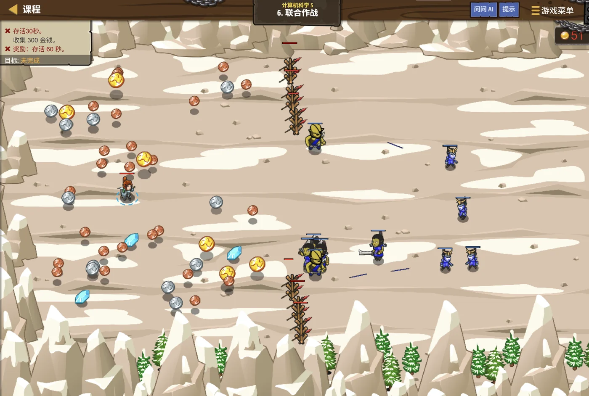

故事：高台的城门外，敌人正在集结。你得不断造兵、布阵，
可每种兵的数量都得留意——造多了浪费，造少了挡不住。
戈登摊开图纸：有个取巧的办法：按"已经造了几个"来决定下一个造什么，
一轮一轮地轮着来。
扣哒考级 · GESP PYTHON 四级 · 第 5 单元 | 齿轮高台 GEARWATCH TERRACE
参数输送管 参数传递与变量作用域
Parameter Passing & Scope

戈登
齿轮工程师 · 你的向导
车间的墙里埋着一排输送管。你在这一头放进一颗齿轮，它顺着管道跑到另一头，
被机器加工，再顺着另一条管子送回来。
可你很快发现一件怪事：有些东西送出去之后，形状变了；有些却完全没变。
戈登敲了敲管道：这就是今天要讲的事——东西是怎么传进函数里，又是怎么出来的。
可你很快发现一件怪事：有些东西送出去之后，形状变了；有些却完全没变。
戈登敲了敲管道：这就是今天要讲的事——东西是怎么传进函数里，又是怎么出来的。
戈登 · 齿轮工程师
上一单元你会写函数了。但有一个问题必须搞清楚：函数里改了一个变量，函数外面到底变没变？
这个问题搞明白，你才算真正会用函数——它也是四级最容易丢分的地方。
assets/illustrations/py-L4-05-01_pipe_system.webp
【配图位】车间墙体剖开，露出一排发光的输送管道：一端是投入口、另一端是输出口，管道内部有零件在流动；两枚零件流经同一段管道，一枚被加工后变形，另一枚原样返回。
0 单元导语与目标
Unit Overview
0.1 学习目标
1学完这个单元，你将能……
- 说清实参是怎么"交给"形参的
- 分辨可变对象与不可变对象在传参时的差别
- 说清局部变量和全局变量的区别
- 判断一段代码里某个变量属于哪个作用域
- 知道 global 关键字的作用与风险
- 预测含函数与变量的代码输出结果
2对标 GESP 考纲（Python 四级）
- 掌握参数传递的基本规则，理解形参与实参的对应关系
- 理解变量的作用域：局部变量与全局变量
- 了解 global 关键字的使用方法及其副作用
- 考核目标：能判断函数内外变量的可见性与修改效果
0.2 考纲对照
| 本单元小节 | 对应考纲条目 | 真题常考形式 |
|---|---|---|
| 1 参数怎么传 | 参数的传递方式 | 函数里改了形参，外面的变量会不会变 |
| 2 可变与不可变 | 可变对象与不可变对象 | 列表传进去被改，外面看得见吗 |
| 3 作用域 | 变量作用域 | 局部变量与全局变量同名时会怎样 |
| 4 global | 全局变量的使用 | global 的作用与代价 |
1 参数是怎么传进去的
How Parameters Pass
1.1 形参改了，实参跟着变吗
先把最常见的疑问说清楚：函数里改了形参，外面的实参会不会跟着变？
数字：外面的没变
Python
def change(n):
n = 99 # 改的是函数里的 n
print("函数里:", n)
x = 10
change(x)
print("函数外:", x)OUTPUT 函数里: 99
函数外: 10
原因 数字是不可变的，函数收到的是"值的副本"
函数外: 10
原因 数字是不可变的，函数收到的是"值的副本"
列表：外面的跟着变了
Python
def addItem(lst):
lst.append(4) # 往列表里加了一个元素
a = [1, 2, 3]
addItem(a)
print(a)OUTPUT [1, 2, 3, 4]
原因 列表是可变的，函数里拿到的和外面的是同一个列表
原因 列表是可变的，函数里拿到的和外面的是同一个列表
图 2（SVG）：传参的两种情形——这决定了函数能否"改变外部数据"
1.2 一条实用结论
打个比方：
传参数就像把东西交给别人，交的东西不同，结果完全不同：
数字、字符串这些"不可变对象"——相当于你抄了一串号码给他，他改自己的那张纸，你手里那张还是原样；
列表、字典这些"可变对象"——相当于你把屋子钥匙给了他，他在屋里挪动了家具，你回去一看也变了。
一句话：不可变对象"改了外面不变"，可变对象"改了外面会变"。
数字、字符串这些"不可变对象"——相当于你抄了一串号码给他，他改自己的那张纸，你手里那张还是原样；
列表、字典这些"可变对象"——相当于你把屋子钥匙给了他，他在屋里挪动了家具，你回去一看也变了。
一句话：不可变对象"改了外面不变"，可变对象"改了外面会变"。
一条实用结论：
想让函数"带回多个结果"，最省事的办法是——
传一个列表进去，让函数往里塞东西。
因为列表是可变对象，函数里的改动外面看得见。
传一个列表进去，让函数往里塞东西。
因为列表是可变对象，函数里的改动外面看得见。
2 可变对象与不可变对象
Mutable & Immutable
2.1 可变对象与不可变对象
| 类型 | 可变吗 | 函数里修改后，外面能看到吗 | 常见例子 |
|---|---|---|---|
| 数字 int / float | ❌ 不可变 | 看不到 | 10、3.14 |
| 字符串 str | ❌ 不可变 | 看不到 | "abc" |
| 元组 tuple | ❌ 不可变 | 看不到 | (1, 2) |
| 列表 list | ✅ 可变 | 能看到 | [1, 2, 3] |
| 字典 dict | ✅ 可变 | 能看到 | {"a": 1} |
| 集合 set | ✅ 可变 | 能看到 | {1, 2, 3} |
2.2 改内容 vs 重新赋值
assets/illustrations/py-L4-05-03_param_flow.webp
【配图位】车间里两根并排的玻璃输送管：左边那根管子里送的是"抄好的号码纸"（不可变对象），外面的人手里还留着一张一样的纸；右边那根管子里送的是"一串钥匙"（可变对象），管子尽头直通一间能看到内部陈设的小屋；英雄站在两根管子的入口处，分别往里投东西。
注意区分"改内容"和"重新赋值"：
这是最微妙、也最爱考的一点。
lst.append(4) 是改内容——外面能看到；lst = [9, 9] 是换了一张标签——外面看不到。这是最微妙、也最爱考的一点。
3 变量作用域
Scope
3.1 变量在哪些地方看得见
接下来是另一个核心问题：一个变量在哪些地方"看得见"？
图 4（SVG）：局部变量只在函数里活着，全局变量到处都能读
局部变量与全局变量
Python
total = 100 # 全局变量
def show():
print(total) # 可以"读"全局变量 → 100
def bad():
print(temp) # ✘ 报错：temp 还没定义
def local():
temp = 5 # 这是局部变量，外面看不见
print(temp)
show()
local()
print(temp) # ✘ 报错：外面根本没有 temp要点 函数里能读全局变量，但函数里新造的变量出了函数就没了
3.2 三条铁律
assets/illustrations/py-L4-05-02_scope_walls.webp
【配图位】一座被剖开的工坊：外面是一片宽敞的外院，院内放着一只标着"全局"的工具箱；院内另有两间封闭的小室，各自放着一只标着"局部"的小工具箱；几条发光箭头从外院指向小室（表示外面能往里看），另有一些箭头在小室边界被一道光墙挡住（表示从外面看不进去）；一名英雄站在外院里，另一名站在小室里。
三条铁律：
① 函数内部可以读取全局变量；
② 函数内部直接赋值的变量，默认是"局部的"，外面看不到；
③ 函数执行完，局部变量就被销毁。
① 函数内部可以读取全局变量；
② 函数内部直接赋值的变量，默认是"局部的"，外面看不到；
③ 函数执行完，局部变量就被销毁。
4 global 关键字
The global Keyword
4.1 global 关键字
如果确实想在函数里修改全局变量呢？Python 提供了 global。
用 global 声明，才能真正改到外面
Python
total = 100
def addGold(n):
global total # 声明：我要改的是外面那个 total
total = total + n
addGold(50)
print(total) # 150
# 如果不写 global，就成了新建一个局部变量，外面永远是 100OUTPUT 150
4.2 为什么建议尽量别用
但建议尽量别用：
你调用一个函数，却不知道它偷偷改了多少全局变量，程序很快就难以维护。
更好的做法：把结果用 return 交出去，或传一个列表进去改。
global 让函数的"影响范围"变得不可预测——你调用一个函数，却不知道它偷偷改了多少全局变量，程序很快就难以维护。
更好的做法：把结果用 return 交出去，或传一个列表进去改。
5 代码实战
Level Practice
关卡
联合作战
进入关卡 →思路：用"已造数量 ÷ 兵种总数"的余数，当作下一个兵种的编号。

assets/stages/py-L4-05-stage1_joint_forces.webp
【关卡截图位】请把《联合作战》的游戏画面截图放到此处（放入 assets/stages/ 目录，文件名为 py-L4-05-stage1_joint_forces.webp）。
重点示例：用取余自动轮换
Python
summonTypes = ["soldier", "archer", "peasant"]
# 已经造了 4 个，那么下一个应该造哪种？
# 4 % 3 = 1 → 第 1 种（archer）
index = len(hero.built) % len(summonTypes)
summonTypes[index]要点
len(hero.built) 是"已造数量"，取余让它始终落在合法编号范围内
为什么取余能"循环"？
因为
余数永远在 0 到 2 之间打转，正好对应三个兵种的编号。 这是"用数学规律代替一堆 if"的典型技巧。
去扣哒世界闯这一关 →
0 % 3 = 0、1 % 3 = 1、
2 % 3 = 2、3 % 3 = 0……余数永远在 0 到 2 之间打转，正好对应三个兵种的编号。 这是"用数学规律代替一堆 if"的典型技巧。
6 常见陷阱
Common Pitfalls

扣哒鸭 · 调试官
作用域的题看起来简单，但极容易"想当然"。四条，条条都在真题里出现过。
1
以为函数里改了数字，外面也会变。

扣哒鸭：数字和字符串是不可变的，
函数拿到的是"复印件"。
改复印件，原件当然不变。想改就
改复印件，原件当然不变。想改就
return 出去，再在外面接住。正确做法：
x = change(x) —— 用返回值覆盖原变量2
函数里想改全局变量，却忘了写 global。

扣哒鸭：不写 global 的话，
要么加
total = total + n 会先在函数里
新建一个局部 total，然后报"局部变量在赋值前被引用"。要么加
global，要么用返回值——后者更推荐。正确做法：优先用 return 传结果，少用 global
3
把"重新赋值"当成"修改内容"。写
lst = lst + [4] 却期待外面变。
扣哒鸭：
要真正改内容，用
lst = lst + [4] 会创建一个新列表，
然后让函数里的名字指向它——外面的列表毫发无损。要真正改内容，用
lst.append(4)。正确做法：原地修改用 append / d["k"]=v；重新赋值只影响函数内部
4
在函数外使用函数里的局部变量。

扣哒鸭：会报
函数一结束，它的局部变量就销毁了。 想让结果活下来，就必须 return 出来。
NameError: name 'temp' is not defined。函数一结束，它的局部变量就销毁了。 想让结果活下来，就必须 return 出来。
正确做法：返回值 + 在外面用变量接住
7 题目练习
Practice
第 1 题改编自 2026 年 9 月 · Python 四级 第 5 题，其余为原创练习题。
改编自 2026 年 9 月 · Python 四级 · 第 5 题单选题
高台的调度室里，函数接收了一个字典。执行下面 Python 代码后，输出的结果是（ ）。
1 def func(d):
2 d = {'new': 'value'}
3 return d
4
5 data = {'old': 'data'}
6 func(data)
7 print(data)A.{} B.{'new': 'value'} C.{'old': 'data'} D.报错
查看答案与详解
答案：C。关键在于第 2 行的
它做的是"把形参 d 这个名字指向一个新字典"，外面
对比一下：如果第 2 行写成
一句话分清：
·
·
对应小节2 可变对象与不可变对象。
d = {'new': 'value'} 是重新赋值，不是修改字典内容。它做的是"把形参 d 这个名字指向一个新字典"，外面
data 这个名字完全没被碰到；函数返回的新字典也没人接住（第 6 行没有赋值），所以 data 还是原来的内容。对比一下：如果第 2 行写成
d['new'] = 'value'（改内容而不是换名字），那外面的字典就会跟着变。一句话分清：
·
d = … —— 换了个对象，外面不受影响；·
d[键] = …／d.append(…) —— 改的是同一个对象，外面会变。对应小节2 可变对象与不可变对象。
原创练习题单选题
下列 Python 代码执行后，输出的结果是（ ）。
1 def f(n): 2 n = n + 10 3 x = 5 4 f(x) 5 print(x)
A.5 B.15 C.None D.报错
查看答案与详解
答案：A。数字是不可变对象，函数里修改形参
正确做法：如果想让 x 变成 15，应该写成
对应小节1 参数是怎么传进去的。
n
不会影响外面的 x。正确做法：如果想让 x 变成 15，应该写成
def f(n): return n + 10，然后在外面
x = f(x)。对应小节1 参数是怎么传进去的。
原创练习题单选题
下列 Python 代码执行后，输出的结果是（ ）。
1 def addItem(lst): 2 lst.append(9) 3 a = [1, 2] 4 addItem(a) 5 print(a)
A.[1, 2] B.[1, 2, 9] C.[9] D.报错
查看答案与详解
答案：B。列表是可变对象，函数里的
对比上一题：数字"复印"，列表"借原件"。
对应小节1 参数是怎么传进去的；2 可变对象与不可变对象。
lst
和外面的 a 指向的是同一个列表，所以 append 的改动外面看得见。对比上一题：数字"复印"，列表"借原件"。
对应小节1 参数是怎么传进去的；2 可变对象与不可变对象。
原创练习题判断题
函数内部可以直接读取全局变量的值。（ ）
查看答案与详解
答案：正确（√）。作用域的规则是"里面能看到外面"：
函数内部可以读取全局变量；但如果在函数里对它赋值， Python 会认为你在创建一个同名局部变量（除非用
对应小节3 变量作用域。
函数内部可以读取全局变量；但如果在函数里对它赋值， Python 会认为你在创建一个同名局部变量（除非用
global 声明）。对应小节3 变量作用域。
原创练习题单选题
下列 Python 代码执行后，输出的结果是（ ）。
1 total = 10 2 def add(n): 3 global total 4 total = total + n 5 add(5) 6 print(total)
A.10 B.15 C.None D.报错
查看答案与详解
答案：B。
如果删掉 global 那一行，就会报 UnboundLocalError。
对应小节4 global 关键字。
global total 声明了"我要改的是外面那个 total"，
所以 total = total + 5 真的把全局变量改成了 15。如果删掉 global 那一行，就会报 UnboundLocalError。
对应小节4 global 关键字。
原创练习题单选题
下列 Python 代码执行后，输出的结果是（ ）。
1 def f(lst): 2 lst = [9, 9] 3 a = [1, 2] 4 f(a) 5 print(a)
A.[9, 9] B.[1, 2] C.[] D.报错
查看答案与详解
答案：B。
外面那个
对比：如果用
对应小节2 可变对象与不可变对象。
lst = [9, 9] 是重新赋值——
它让函数里的名字 lst 指向一个新的列表，外面那个
a 完全没动，仍然是 [1, 2]。对比：如果用
lst.append(9) 就会改变 a。这就是"改内容"和"换标签"的区别。对应小节2 可变对象与不可变对象。
原创练习题判断题
函数执行结束后，函数内部定义的局部变量仍然可以在函数外访问。（ ）
查看答案与详解
答案：错误（×）。局部变量的"生命周期"只在函数执行期间，
函数一返回它就被销毁，函数外访问会报
想让结果活下来，必须用
对应小节3 变量作用域。
NameError。想让结果活下来，必须用
return 交出来。对应小节3 变量作用域。
原创练习题编程题
题目要求：定义一个函数
doubleAll(nums)，
把传入列表里的每个数字都翻倍（要求原地修改，调用后原列表真的变了），再输出新列表。查看参考答案与要点
def doubleAll(nums):
for i in range(len(nums)):
nums[i] = nums[i] * 2 # 直接改列表里的元素
a = [1, 2, 3]
doubleAll(a)
print(a) # [2, 4, 6]
输出：[2, 4, 6]
要点：
① 列表是可变对象，按下标修改元素会真正改动外面那个列表；
② 如果写成 nums = [x*2 for x in nums]，
那就变成了"重新赋值"，外面看不到变化；
③ 若不想改动原列表，就应该用 return 返回新列表，让调用方自己接住。
对应小节1 参数是怎么传进去的；2 可变对象与不可变对象。
8 本单元小结
Unit Summary
戈登 · 齿轮工程师
这一单元只有三句话，但每一句都直接对应考题：一、数字字符串传"副本"，列表字典传"原件"。
二、函数里能读全局变量；但里面对它赋值就会变成新的局部变量。
三、想让函数带回结果，首选 return，尽量别用 global。
把这三句记牢，四级里所有作用域的题你都能拿下。
你在参数输送管前收获了什么
- 传参规则——不可变对象传副本，函数里改外面看不到；可变对象传同一份，函数里改外面能看到。
- 可变与不可变——数字、字符串、元组不可变；列表、字典、集合可变。
- 改内容 vs 换标签——
lst.append(x)外面能看到；lst = [...]外面看不到。 - 作用域——函数内部是局部作用域，外面是全局作用域；"里面能看外面，外面看不到里面"。
- 局部变量——函数一结束就销毁，外面无法访问。
- global——声明后才能修改全局变量；但更推荐用 return。
- 实战技巧——想让函数"带回多个结果"，可以传列表进去原地修改。